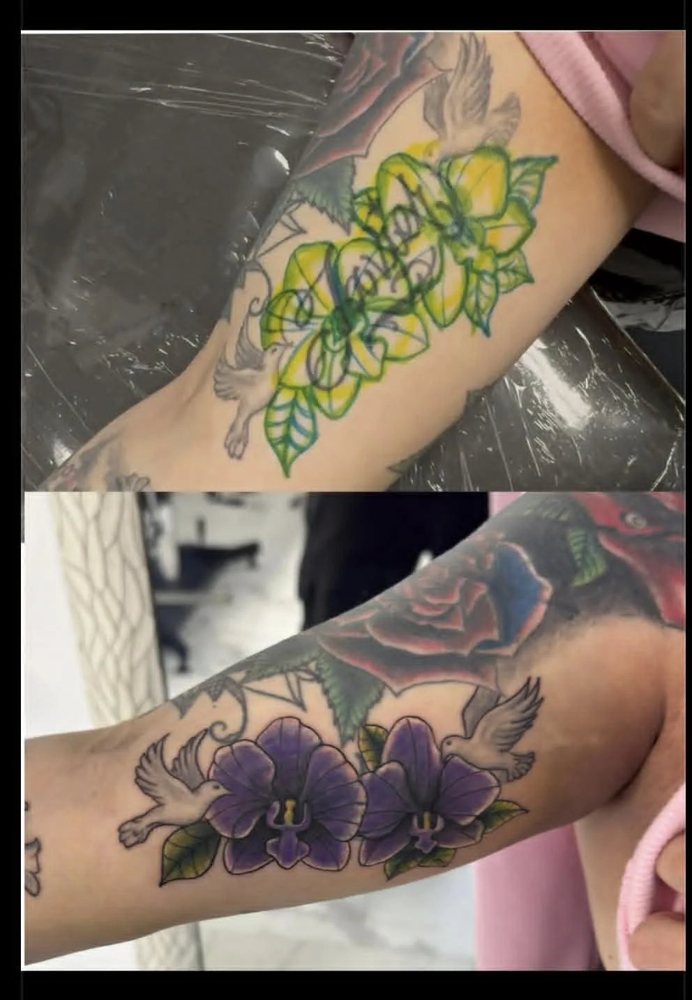
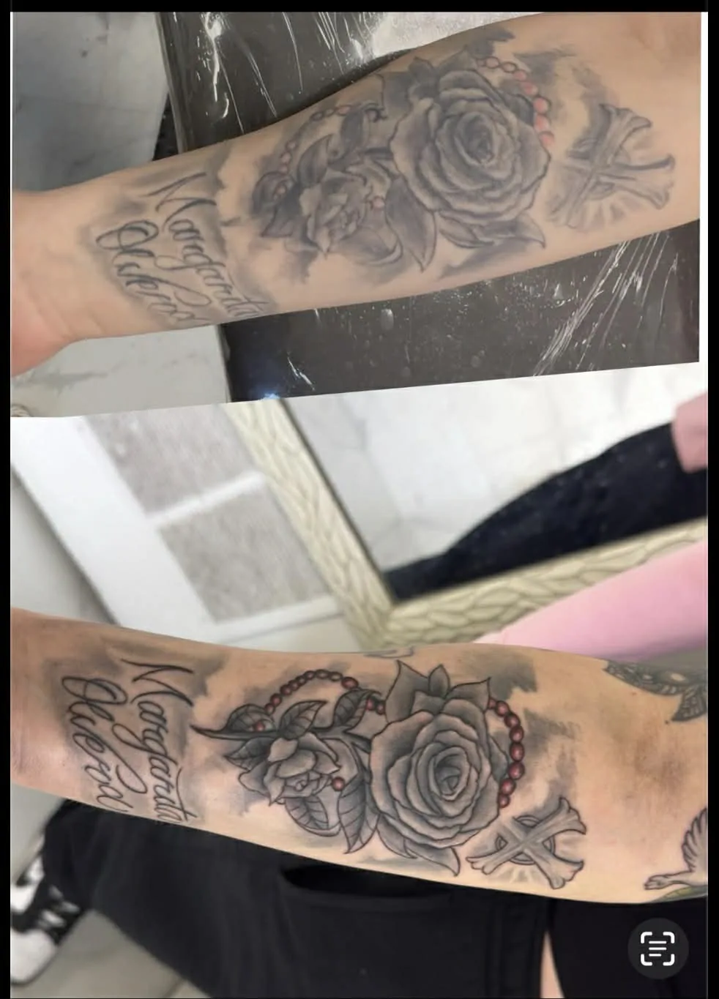
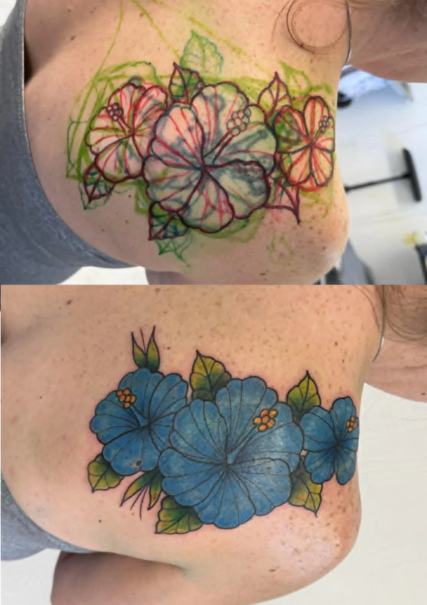

Old, faded or unwanted ink — transformed into work you're proud to show.
A cover-up is one of the hardest things a tattoo artist does well. It is not just drawing something bigger on top — it is designing a brand-new piece that works with the old tattoo so the result looks intentional, not like a patch. Carlos has spent years turning regretted, faded and outdated tattoos into custom pieces clients are proud of.
Every cover-up or rework starts with an honest assessment. Bring a clear photo of your existing tattoo and Carlos will tell you straight what is possible — what can be fully covered, what might need a session of laser lightening first, and how to design around it so the old ink disappears for good.



Each pair shows the original tattoo and the finished result. See more transformations on Instagram or book a consultation to review options for your tattoo.
Not every tattoo can be covered the same way. Carlos tells you up front what is realistic — and when fading or laser first will give a far better result.
The new design is built around the old tattoo — placement, flow and density planned so the existing ink reads as fresh, intentional work.
Strategic value, color and saturation fully bury old lines, so the cover-up stays clean for decades instead of ghosting back.
Most can, but darkness, size and age all matter. At the consultation Carlos assesses your existing tattoo and tells you honestly what is realistic — sometimes a few sessions of laser lightening first open up far more design options.
When designed correctly, no. The new piece is built with the placement, density and contrast needed to fully bury the old lines, which is why a cover-up is designed around your existing tattoo rather than simply stamped over it.
Usually somewhat larger, and often darker in places — but not always heavy or black. Smart use of color, negative space and organic shapes can keep a cover-up looking like a deliberate new tattoo rather than a blackout.
A rework refreshes or rebuilds a tattoo you mostly like — sharpening faded lines, adding shading or color, or extending it into something larger. A cover-up fully hides an existing tattoo under a new design.
Bring a clear photo of your existing tattoo to a free consultation, in person or remote. Based at Koi Dragon Tattoos in Murray, Utah — booking clients worldwide.